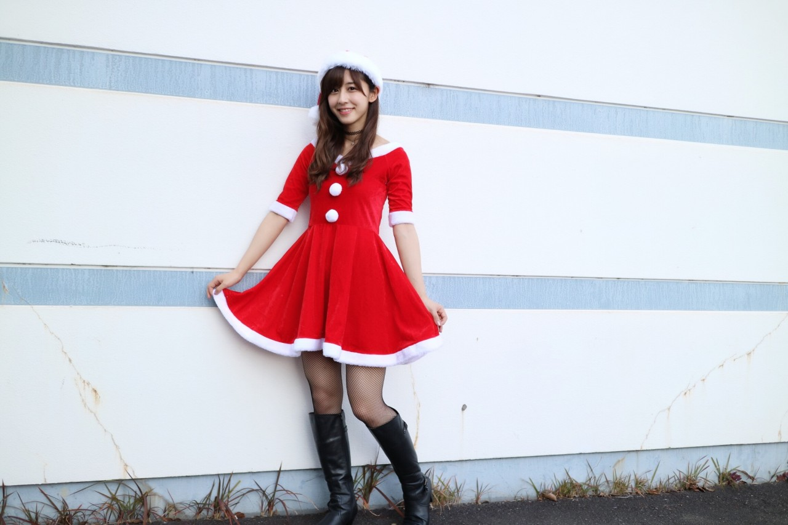
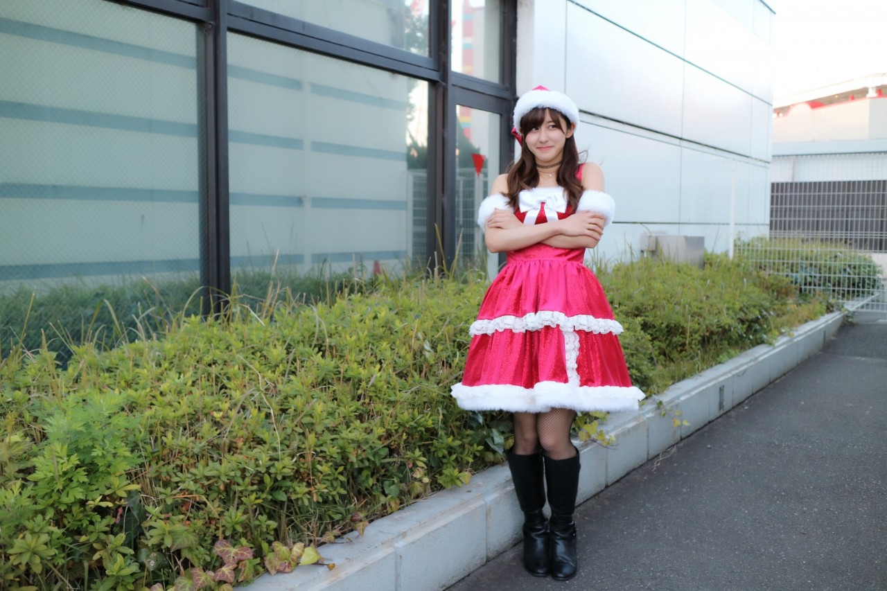

| 2016/12 18 Sun | 斎藤ちはる 個握in名古屋 |
ちはるーむへようこそ！
今年最後の握手会、
名古屋での個別握手会が終わりました◎
来てくださった皆さんありがとうございました！！
いつも支えてくださる皆さんと会えて良かった。
お話しできて良かった。
今年一年の感謝の言葉を伝えられて良かった。
皆さんのおかげで今年一年頑張れました。
本当に心の支えです！
ありがとうございます\( ˆ ˆ )/
そして今日はクリスマスに近いということで
サンタコスをしました〜
3部と4部では別々のサンタコスをしたの！
サンタコスを1日に２着着るのは初めて(笑)
特別だね(﹡ˆ ˆ﹡)
3部ver.

真っ赤な、一般的なサンタさん！
肩の部分をもっと下げると
真夏みたいにオフショルガールになるんだけど
上がってきちゃってオフショルガールには
なりませんでした( ´ｰ`)
4部ver.

キャミソールワンピースに、
腕には白のモコモコファー！
リボンもファーも付いていてラブリー。
こちらの衣装はスタイリストさんが
作ってくださったので、
生地にラメが入っていて素敵だった♪
サンタ衣装、4タイプあるので
どのメンバーがどのタイプを着ているのかも
チェックしてみてね！
#chihaOOTD
２つの衣装にはチョーカーも
ばっちりつけました◎
チョーカー×網タイツで
他のメンバーとは少し変化を。
重ねづけ◎
上のタトゥーチョーカーは
今まで使っていたのが使い過ぎて
伸びてしまったので、笑
新調しました！
Another Editionのもの。
下のネックレス風チョーカーは
3本セットで売っていた
コスパの良いチョーカーです！
優里も買おうと思ってたみたい♪
ZARAのもの。
--------------------------------♡
♬ ChihaMusic
「流星」コブクロさん
冬にぴったりな曲。
冬の星空が眼に浮かんでくる。
歌詞もとても綺麗。
壮大で美しくて優しくて力強くて
素敵な曲。
"君より綺麗な人でも
君より優しい人でも
君にはなれないんだ もう誰も"
この歌詞にグッときました。
どんなに自分よりも優れた人だって
どんなに自分よりも恵まれた人だって
絶対に自分にはなれない。
たったひとりの自分を大切にしたいと
思うことが出来ます。
本日甲子園ボウルが終わりました！！
関西学院大学vs早稲田大学の決勝。
お疲れ様でした( ;o; )
本当に観に行きたかった( ;o; )
でも録画していた試合を父と見ました！
やはりアメフトは面白いな〜と思いつつ
私と完全に同学年の選手達のプレイを見ていると
凄い。カッコいい。と感じました。
そしてずっと行きたいと思っていた
写真展が今日終わってしまった...
今城純さんの写真展。
『encase』
今城純さんの優しい写真が大好きなので
直接見に行きたかったな〜(> <)
行きたい場所、やりたい事が沢山ある...！
毎日時間が足りない...！
一日30時間あればいいのに。
一年が400日あればいいのに。
と、定期的に思う私でした。
おやすみ〜
斎藤ちはる